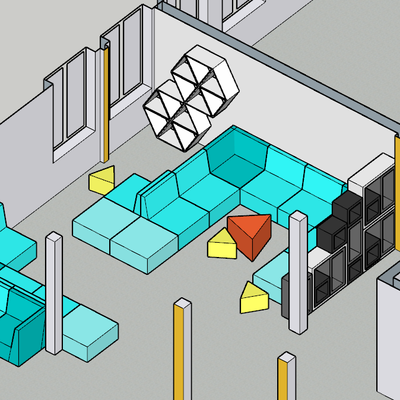
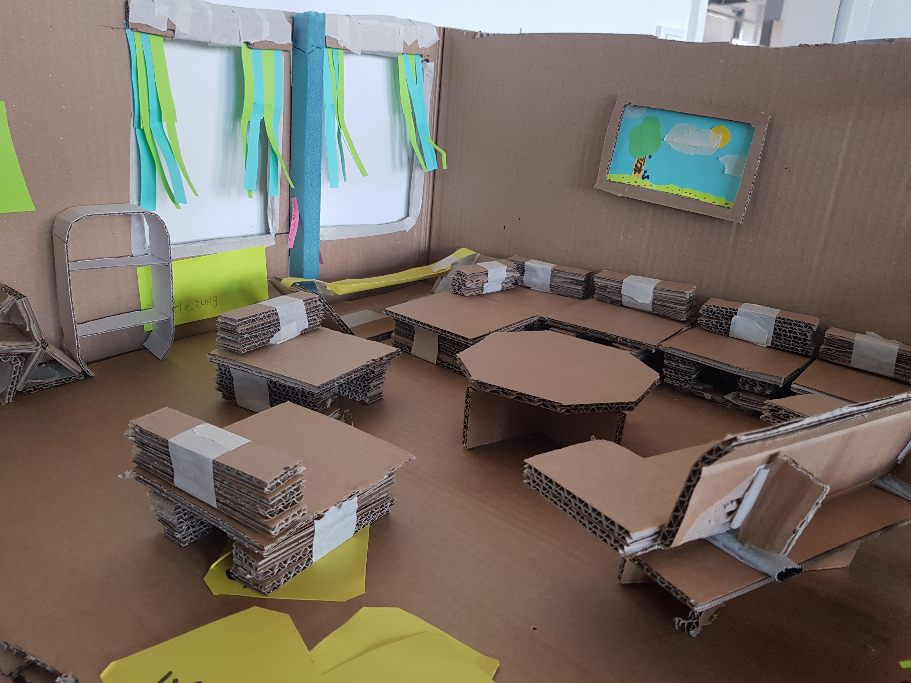

Originally a course about designing and building furniture for our campus — but the pandemic turned it into building small-scale models for the home office instead.

To show off the features I had in mind for my model, I made a little stop-motion film.
Because the program was brand new, an earlier course had us build cardboard furniture for the mostly empty campus. I also dusted off SketchUp — software from an old architecture internship — to design a modular furniture system.

My team also built this scale model to gather ideas, along with working tables, triangular seating pods and a ping-pong table.
